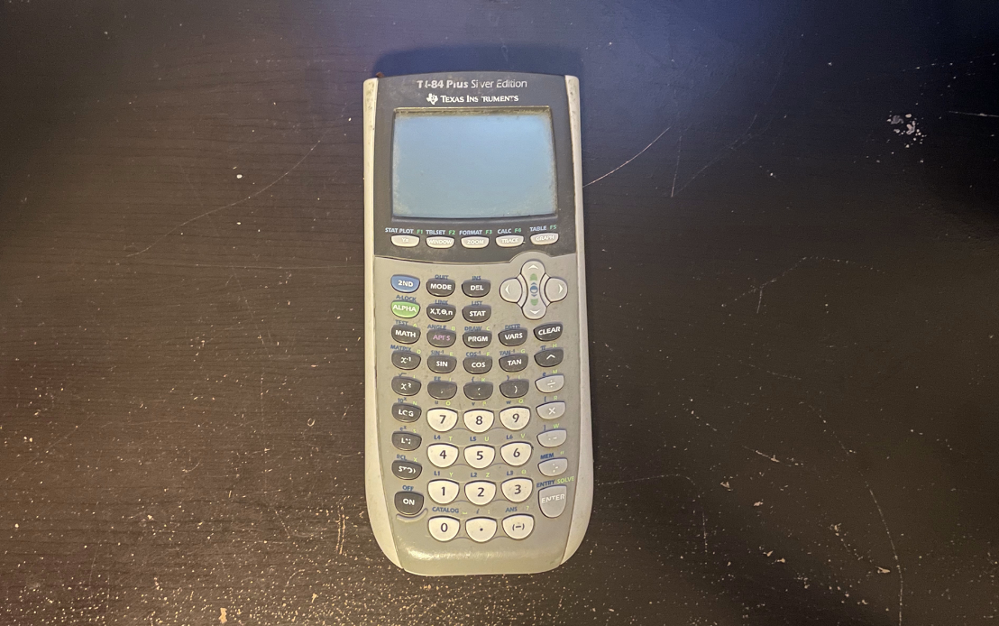

Nicholas Jefferis

Welcome to my E-Portfolio!
My name is Nicholas Jefferis. I am currently enrolled at the University of Cincinnati pursuing a Bachelor's of Science in Computer Science.
My coding career began in the 7th grade when my math teacher introduced me to creating programs on my TI-84 calculator.

This is the TI-84 calculator where it all started in seventh grade. I started out by writing programs to help speed up my math homework.
That morphed into animations. The one I remember most fondly was a firework launching and bursting in the sky.
After making a few terrible side scrolling games, I decided I wanted to develop a rogue-like game featuring random world generation.
Since I was doing this without researching how other people develop random world (like using perlin noise), I used a motified version of
Conway's Game of Life to generate my worlds. I also developed my own assets for the game. This project was never completed but I learned
a lot while working on it.